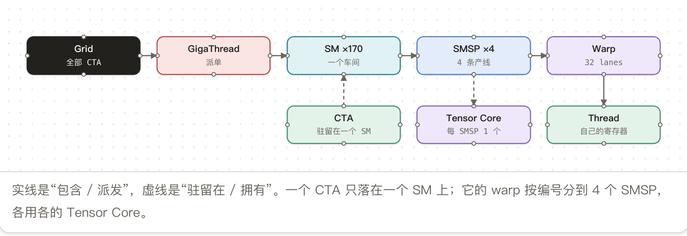
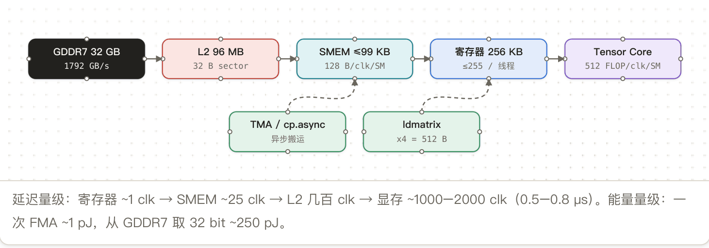
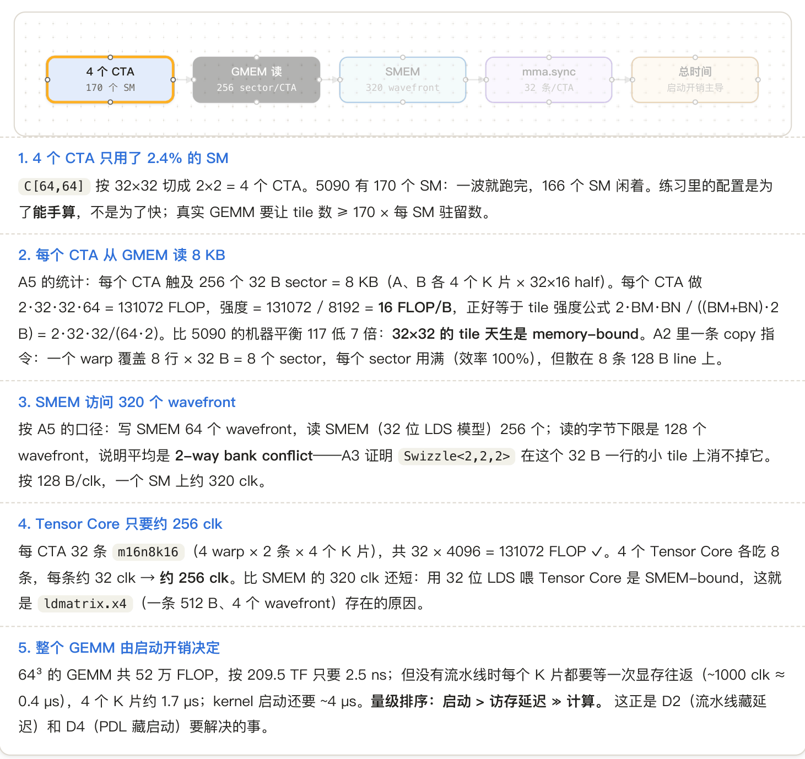

硬件心智模型：汽车工厂类比 + RTX 5090 的真实数字
先把 GPU 想成一座汽车工厂：订单（Grid）拆给生产小组（CTA），小组进车间（SM），车间里有4 条产线（SMSP），每条产线一次派一个 32 人班组（Warp）干活。然后给每一层配上 RTX 5090（GB202 · sm_120）的真实数字，并对照本套练习默认的 Hopper（H100 · sm_90）。目标是解题时脑子里有画面，手上有量级。
一张对照表：工厂 ↔ GPU ↔ 5090 的数字
先记住层级和每一层“有几个、多大、多快”。表里的 5090 数字来自 NVIDIA RTX Blackwell 白皮书和 CUDA Programming Guide 的 cc 12.0 列。
| GPU 概念 | 工厂类比 | 它负责什么 | RTX 5090（sm_120） |
|---|---|---|---|
| GPU | 整个汽车制造集团 | 执行一次次 kernel launch | GB202，170 个 SM，boost 2.41 GHz |
| Grid | 一批生产订单 | 一次 launch 的全部 CTA | 大小由你定：通常 = 输出 tile 数 |
| GigaThread Engine | 集团派单中心 | 把 CTA 派到有空位的 SM | CTA 一旦上了某个 SM 就不再迁移 |
| SM | 一个物理车间 | 提供计算单元、寄存器、SMEM | 170 个；每个 4 SMSP · 128 FP32 lane · 4 Tensor Core |
| SMSP（SM 子分区） | 车间里的 4 条产线 | 每条有自己的调度员、寄存器、Tensor Core | 每 SM 4 个；warp 按编号固定落在一条产线上 |
| CTA / Block | 一个生产小组 | 定义协作和同步的范围 | ≤1024 线程；每 SM 同时驻留数受四个上限约束 |
| Warp | 32 人执行班组 | 硬件调度、发射指令的最小单位 | 32 lanes，SIMT；每 SM ≤48 个驻留 warp |
| Thread / Lane | 一个工人 | 处理自己那几个数据 | 每 SM ≤1536 线程；每线程 ≤255 寄存器 |
| Warp Scheduler | 产线调度员 | 每拍从 ready 的班组里挑一个，发一条指令 | 每 SMSP 每时钟 1 条 warp 指令 |
| Register | 工人手边的工具台 | 线程私有，最快 | 64K × 32 bit = 256 KB / SM（比 SMEM 还大） |
| Shared Memory | 小组共用的工作台 | 同一 CTA 的线程协作读写 | L1+SMEM 共 128 KB / SM；SMEM≤100 KB / SM、≤99 KB / CTA |
| L2 Cache | 园区中转仓 | 所有 SM 共享，GMEM 访问都先到这里 | 96 MB；以 32 B sector、128 B line 为单位 |
| Global Memory | 集团中央仓库 | 容量大，但远、慢 | 32 GB GDDR7，1792 GB/s |
| CUDA Core | 通用加工机床 | 标量 FP32/INT32 算术 | 256 FLOP/clk/SM → 104.9 TFLOPS FP32 |
| Tensor Core | 专用矩阵冲压机 | 一条指令做一小块矩阵乘加 | BF16（FP32 累加）512 FLOP/clk/SM → 209.5 TFLOPS |
| TMA | 自动化叉车（AGV） | 一张“提货单”（描述符）搬整块多维 tile | 支持（需 sm_120a ）；无 multicast |
| mbarrier | 收货签收单 | 记录“还差多少箱没到”，到齐才放行 | 8 B 对象，放在 SMEM |
| PDL | 下一批订单提前进场备料 | 后继 kernel 在前一个结束前启动 prologue | 支持（griddepcontrol ） |
Grid 分配一批任务，GigaThread 把 CTA 派进车间，CTA 组织协作，SM 提供资源，SMSP 是车间里的 4 条产线，Warp 是成组执行的班组，Thread 处理具体数据。数据要沿着“仓库 → 中转仓 → 工作台 → 工具台 → 冲压机”一路搬近，每搬近一层，就要被用很多次。
层级怎样嵌套：从订单到工人

假设 kernel<<<100, 128>>> ：
- Grid = 100 个 CTA，每个 CTA 128 个线程 = 4 个 warp。
- 5090 有 170 个 SM，100 个 CTA 一波就能全部驻留，70 个 SM 闲着——这就是为什么 grid 大小要和 170 对着想（见怎样定 CTA / tile / warp 的数量）。
- 一个 CTA 不会被拆到多个 SM；放不下的 CTA 排队等下一波。
- CTA 内 4 个 warp 正好一 SMSP 一个，4 个 Tensor Core 都能用上。这是“每 CTA warp 数取 4 的倍数”的硬件原因。
一个 SM 每时钟发射几个 warp、能驻留几个 warp 和 CTA、warp 为什么不能跨 SMSP、线程和 warp 各自是什么粒度、哪些指令必须整个 warp 一起执行、Tensor Core 和 CUDA core 怎样在同一个 SMSP 上同时工作——这些都整理在执行模型：thread、warp、SMSP、CTA 怎样跑起来。
类比哪里准、哪里会误导
原来的工厂类比很好记，但有几处要校正，否则解题时会推错：
| 直觉 | 实际情况 | 影响哪道题 |
|---|---|---|
| “每个 warp 负责不同子任务” | 普通 GEMM 里所有 warp 做同一种事，只是分到不同数据块（warp tile）。只有 warp specialization 才让 warp 承担不同角色（producer 搬、consumer 算） | A4、D3 |
| “班组里 32 个工人各干各的” | 同一个 warp 的 32 个 lane 同一时刻执行同一条指令（SIMT），各自处理不同数据；走不同分支会串行化 | A2、A4 |
| “调度员在所有班组里挑” | 每个 SMSP 有自己的调度员，只在本产线的 warp 里挑；一个 SM 每时钟最多发 4 条 warp 指令 | D3 |
| “工作台是车间的” | SMEM 是 SM 的物理资源，但按 CTA 分配；不同 CTA 看不到彼此的 SMEM（cluster 的 DSMEM 例外） | A3、D2 |
| “搬料越近越快是因为距离” | 显存往返 ~0.5–0.8 µs 里，导线飞行时间不到 0.1%；延迟来自 DRAM 时序和排队。优化手段是多发、提前发、复用，不是“离近点” | D2、E2 |
| “Tensor Core 是另一个车间” | Tensor Core 就在 SMSP 里，操作数和累加器都在寄存器里（sm_120 没有 TMEM），所以大 tile 直接吃寄存器 | A4、E2 |
Warp 0 在等内存时，调度员会切到 ready 的 Warp 1、2 —— 这就是 latency hiding。但前提是真的有别的 ready warp 或独立指令。GEMM 常用“低占用（每 SM 8–12 warp）+ 高 ILP（每线程大量累加器 + 多级流水线）”来隐藏延迟，而不是堆很多 warp。
数字直觉：把规格换算成“每 SM 每时钟”
全芯片峰值 = 每 SM 每时钟 × 170 × 2.41 GHz（= 409.7 G SM·clk/s）。解题时优先用“每 SM 每时钟”思考，因为一个 CTA 只能用到一个 SM。
| 量 | 5090（sm_120） | H100 SXM（sm_90，E2 用的模型） | 怎么用 |
|---|---|---|---|
| SM 数 | 170 | 132 | 一波能放多少 CTA |
| BF16 Tensor（FP32 累加，dense） | 512 FLOP/clk/SM · 209.5 TF | ≈4096 FLOP/clk/SM ·989 TF | 算力天花板 |
一条 m16n8k16 |
4096 FLOP，单个 Tensor Core 约 32 clk | — （Hopper 主路径是 WGMMA） | 数 mma 条数 → 估时钟 |
| 显存带宽 | 1792 GB/s ≈ 4.4 B/clk/SM | 3.35 TB/s | memory-bound 的上限 |
| 机器平衡（显存） | 117 FLOP/B | ≈295 FLOP/B | 强度低于它 = memory-bound |
| SMEM 带宽 | 32 bank × 4 B = 128 B/clk/SM | 128 B/clk/SM | 数 wavefront → 估时钟 |
| SMEM 平衡 | 4 FLOP/B（Tensor Core 很“不饿”） | 32 FLOP/B | 5090 上 Ampere 式 ldmatrix 就能喂饱 |
| 寄存器 | 64K × 32 bit / SM，≤255/ 线程 | 同 | 累加器和占用率 |
| SMEM 容量 | ≤100 KB / SM，≤99 KB/ CTA | ≤228 KB / SM，227 KB /CTA（232448 B） | 决定 tile 和 stage 数 |
| L2 | 96 MB | 50 MB | tile 之间的复用 |
| 驻留上限 | 1536 线程 / 48 warp / 32 CTA 每 SM | 2048 线程 / 64 warp / 32 CTA | 占用率计算 |
| 在途字节（Little 定律） | 1.79 TB/s × ~0.7 µs ≈ 1.2 MB ≈ 7 KB / SM | — | 流水线至少要有这么多字节在飞 |
| kernel 启动 | stream ~4 µs / kernel；graph + PDL 亚 µs | 同量级 | 小 kernel 的真正成本 |
H100 的每 SM 数字是由 989 TF ÷ 132 SM ÷ ~1.83 GHz 推算的，量级用来对比，不作精确值。
集团有 170 个车间。每个车间每拍能冲压 512 个“FLOP 零件”，但园区仓库每拍只能给每个车间送来 4.4 箱（字节）原料：每箱原料至少要冲压 117 次，冲压机才不会停下来等料。车间内的工作台每拍能递 128 箱，冲压机只要求每箱用 4 次——所以 5090 上“工作台不够快”很少是瓶颈，“仓库送料不够”和“工作台太小（99 KB）”才是。
存储层级：距离、容量、延迟

| 层级 | 5090 容量 | 全芯片合计 | 典型延迟 | GEMM 里放什么 |
|---|---|---|---|---|
| 寄存器 | 256 KB / SM | 43.5 MB | ~1 clk | 累加器、A/B fragment |
| SMEM | ≤100 KB / SM | ~17 MB | ~25 clk | 多级 stage 的 A/B tile |
| L2 | 96 MB 共享 | 96 MB | 几百 clk | 同时在跑的 CTA 共享的 A 行、B 列 |
| GDDR7 | 32 GB | 32 GB | ~1000+ clk | 整个矩阵 |
注意两个反直觉的数字：寄存器总量（43.5 MB）比 SMEM（17 MB）还大；L2（96 MB）能装下 4096×4096 BF16 的 A 和 B（共 64 MB）。
cache line、sector、bank：搬运粒度和并行粒度
这三个词经常一起出现，但回答的是两个不同的问题：
- cache line / sector（L1、L2）：从远处往近处搬数据，按多大一块搬、按多大一块登记。
- bank（SMEM）：近处的存储一个时钟能同时服务多少个不同的地址。
cache line 和 sector
cache 是显存的一份副本，放在离 SM 近的地方。它要记住“我手里存的是哪些地址的数据”；一个字节一个字节地登记，登记表会比数据本身还大。所以 cache 按块管理：
cache line = 一块 128 B、按 128 B 对齐的地址范围（0–127 是一条，128–255 是下一条……）
每条 line 在 cache 里占一个条目：[ 标签：这是哪段地址 | 128 B 真实数据 ]
一条 line = [ sector 0 | sector 1 | sector 2 | sector 3 ] 每个 32 B
一个标签管 4 个 sector，每个 sector 各有一个“是否有效”的标记
- line 是登记和替换的单位：读一个地址时，硬件先算它属于哪条 line，再查这条 line 在不在 cache 里。
- sector 是搬运的单位：缺哪个 sector 就取哪个，不必每次都搬整条 128 B。标签按 128 B 登记（登记表小），数据按 32 B 搬（浪费少），这是一个折中。
L2 里的 line 存的就是真实数据：命中和缺失
| 情况 | 发生了什么 | 大致延迟 |
|---|---|---|
| 命中（hit） | 数据已经在 L2 的某条 line 里，直接从片上送给 SM，不碰显存 | 几百个时钟（片上，要穿过 crossbar；经验值，最好实测） |
| 缺失（miss） | L2 里没有：先去 GDDR7 把缺的 sector 取回来，存进一条 line，再送给 SM | 约 1000–2000 个时钟（0.5–0.8 µs） |
所以只有第一次访问要去芯片外的显存；数据搬回来以后留在 L2，之后任何 SM 再读同一个地址都命中，直到这条 line 被别的数据挤出去。两个细节：
- miss 时只取缺的 sector；TMA 可以用
L2_PROMOTION_128B之类的提示让 L2 一次多取一些。 - 写也是先写进 L2 的 line，等这条 line 被换出时才写回显存。
GEMM 正是靠这一点：端到端例子里 128 个 CTA 一共从 L2 读了 24 MB，但整个问题只碰显存 3 MB——A 的同一条 64 行 panel 被 8 个 CTA 读、B 的同一条 32 行 panel 被 16 个 CTA 读，只有第一个 CTA 是 miss，其余都命中 L2。L2 命中不占显存带宽，这就是 tile 光栅化顺序（让同时在跑的 CTA 读同一片 A / B）重要的原因。
bank
SMEM 不是 cache：它不是谁的副本，没有标签，也没有命中或缺失。它要解决的是：一个 warp 的 32 个线程同时来读，怎样在一个时钟里全部给出去？ 一块 SRAM 每个时钟只能读一个地址，所以 SMEM 做成 32 块独立的小 SRAM（bank），地址按 4 B 轮流分到各个 bank：
字节地址： 0–3 4–7 8–11 … 124–127 | 128–131 132–135 …
bank： 0 1 2 … 31 | 0 1 …
└──────── 128 B 正好走完一圈 ────────┘
32 个线程落在 32 个不同的 bank，一个时钟读完；几个线程访问同一个 bank 的不同地址，这个 bank 只能一个一个给，要分几次读——这就是 bank conflict。（几个线程读同一个地址不算冲突，硬件会广播。）
两者对比
| cache line / sector（L1、L2） | bank（SMEM） | |
|---|---|---|
| 要解决的问题 | 远处的数据搬多少、怎么登记 | 近处的存储同时服务多少个地址 |
| 方向 | 纵向：显存 ↔ L2 ↔ SM | 横向：32 个 lane 同时访问 |
| 单位 | 搬 32 B（sector），登记 128 B（line） | 每个 bank 每个时钟 4 B，共 32 个 bank |
| 访问方式差的后果 | 浪费带宽：搬进来的 sector 里大部分字节没用上（跨步访问） | 串行化：同一个 bank 被访问几次，就要读几次 |
| 好的访问方式 | 一个 warp 读连续、对齐的 128 B = 4 个 sector | 32 个线程落在 32 个不同的 bank，或读同一个地址 |
| 解决手段 | 合并访问、对齐、tile 一行凑满 128 B | swizzle、padding |
为什么两边都是 128 B：一个 warp 32 个线程 × 每人 4 B = 128 B。L2 的 line 做成 128 B，一个 warp 读连续的 float 正好一条整 line；SMEM 做成 32 个 bank × 4 B，同样的访问正好铺满所有 bank。两个设计都是对着 warp 的宽度定的。（L1 和 SMEM 是同一块 SRAM，所以 L1 命中的数据交给 warp 时，同样受这 32 个 bank、每个时钟 128 B 的限制。）
cache line / sector：中央仓库发货按箱（32 B），货架按托盘登记（一托盘 4 箱，128 B）；园区中转仓（L2）里存的是真货，第一次要去中央仓库调，之后谁要都直接从中转仓拿。bank：小组工作台有 32 个抽屉，每个抽屉一次只能一个人开；32 个人同时来拿，最好每人开不同的抽屉，否则就要排队。
L1 和 SMEM：同一块 128 KB SRAM，两种用法
每个 SM 有 128 KB 片上 SRAM，按 carveout（划分比例）切成两部分。图里写的“L1 / Shared memory 128 KB”是这块 SRAM 的总量，不是各 128 KB。
| SMEM（shared memory） | L1 data cache | |
|---|---|---|
| 谁来管 | 程序员：显式声明、显式读写（__shared__ 、cp.async 、TMA） |
硬件：自动缓存 global /local 的读取 |
| 地址 | 自己的 shared 地址空间，按 CTA 分配 | 透明，程序看不到 |
| 5090 的容量 | 每 SM ≤ 100 KB，每 CTA ≤ 99 KB | 128 KB 减去 SMEM 后剩下的部分 |
| 线程间交换数据 | ✓ 写进去、__syncthreads() 后别的线程就能读 |
✗ 不是用来通信的 |
| 控制布局（swizzle、避免 bank conflict） | ✓ | ✗ |
作为 cp.async / TMA 的目标 |
✓ | ✗ 异步搬运只能写进 SMEM |
carveout 有几档，driver 按 kernel 申请的 SMEM 自动选一档；也可以用 cudaFuncSetAttribute(k, cudaFuncAttributePreferredSharedMemoryCarveout, ...) 指定偏好。kernel 申请的 SMEM 越少，留给 L1 的越多——对不用 SMEM 的 kernel，这是白给的缓存。
L1 一般在做什么
| 用途 | 说明 |
|---|---|
| 缓存普通的 global 读取 | LDG （例如 x = A[i] ）可以缓存在 L1；同一个 SM 上的线程不久后再读附近的地址就能命中 |
| 只读数据路径 | __ldg() 、const __restrict__ 指针、ld.global.nc 走只读 / 纹理路径，用的也是这块 L1 |
| local memory | 寄存器溢出（spill）、按动态下标访问的线程私有数组、调用栈；它们在显存里，但通常先命中 L1，少量 spill 不至于太慢 |
| 写 | 不在 L1 停留，直接写穿到 L2；L1 在 SM 之间不保持一致，别的 SM 写的数据不能指望在本 SM 的 L1 里看到最新值 |
什么时候用 SMEM，什么时候交给 L1
- 复用模式已知、结构规整 → SMEM：GEMM 的 tile、卷积窗口、FlashAttention 的 Q/K/V 块、block 内归约。GEMM 的
cp.async.cg和 TMA 都绕过 L1、从 L2 直接写进 SMEM，所以即使 L1 只剩 28 KB 也没关系。 - 复用不规则、难以预测 → 交给 L1 / L2：查表、图算法、稀疏访问、embedding gather。
- 每个元素只读一次（elementwise） → 两者都帮不上，瓶颈是显存带宽；可以用
ld.global.cg或.L1::no_allocate之类的 hint 避免流式数据把 L1 里有用的数据挤出去。
谁能访问：每一层的共享范围
| 物理位置 | 谁能访问 | |
|---|---|---|
| 寄存器 | 每个 SMSP 一份（64 KB） | 只有自己的线程（__shfl_sync 可在同一 warp 内交换） |
| SMEM | 每个 SM 一份 | 按 CTA 划分：一个 CTA 分到自己的那一段，它的所有线程都能访问，不管落在哪个 SMSP；同一 SM 上的其他 CTA 看不到 |
| L1 | 每个 SM 一份 | 这个 SM 上的所有 CTA、所有 warp 共用，对程序透明：CTA 0 读进来的数据，CTA 1 再读同一地址也能命中 |
| L2 | 整个芯片一份（96 MB） | 所有 SM 共用 |
推论：SMEM 的 128 B/clk 带宽由这个 SM 上所有 warp 共用；SMEM 不能在 CTA 之间通信（即使在同一个 SM 上），跨 CTA 只能走 global memory（L2）或 cluster 的 DSMEM；每个 SM 的 L1 互相独立、不保持一致。
本套练习在 5090 上是什么量级
用具体数字把练习里的计数“落地”。

练习题号 ↔ 硬件数字速查
| 题目 | 解题时要用的硬件事实（5090 / H100） |
|---|---|
| A1 | CTA 不跨 SM；tile 数 vs 170（H100：132）个 SM；越界用谓词屏蔽而不是缩小 tile |
| A2 | 32 B sector、128 B line；每线程 16 B 是最宽的单次访问（LDG.128 / cp.async 16 B），本例是 8 B |
| A3 | 32 bank × 4 B；一个 warp 一次最多 128 B 无冲突；ldmatrix 的 8 个行地址要落在不同的 16 B bank 组 |
| A4 | m16n8k16 ：每线程 A 4 × b32、B 2 × b32、C 4 × f32；一条 4096 FLOP；warp 是 MMA 的执行单位 |
| A5 | 数 sector / wavefront / mma 后乘上“每 SM 每时钟”的速率，就能估出瓶颈在哪一层 |
| B2 | 向量宽度上限 16 B；swizzle 把连续段压到 2^M 个元素；对齐不足 16 B 就只能用窄指令 |
| D1 | TMA box 每维 ≤256 元素，内层字节数是 16 的倍数；expect_tx 必须等于 box 实际字节（含越界填零） |
| D2 | 在途字节 ≈ 7 KB / SM（5090）；stage × 每级字节 ≤ SMEM 上限；ring 每绕一圈 phase 翻转 |
| D3 | 寄存器 65536 / SM，按 8 个一组分配；setmaxnreg 只在 sm_90a / sm_100a 上有，5090 没有，producer / consumer 只能拿同样的寄存器上限 |
| D4 | stream 启动 ~4 µs，graph + PDL 亚 µs；小 kernel 链里启动开销往往大于计算 |
| E1 | Hopper 结构：TMA → swizzled SMEM ring → mbarrier → WGMMA → epilogue → PDL；5090 上把 WGMMA 换成 ldmatrix + mma.sync 、累加器留在寄存器 |
| E2 | 模型用 H100（132 SM、227 KB SMEM / CTA）；换成 5090 时 SMEM 只有 99 KB，stage 数和 tile 会被压小（见 怎样定 CTA / tile / warp 的数量） |
5090 上没有的东西（读 Hopper / Blackwell 数据中心代码时注意）
| 机制 | H100（sm_90a） | B200（sm_100a） | RTX 5090（sm_120） | 5090 上的替代 |
|---|---|---|---|---|
| warp group MMA | WGMMA | tcgen05.mma | 无 | warp 级 mma.sync（m16n8k16 / k32 /k64） |
| 累加器位置 | 寄存器 | TMEM（256 KB/ SM） | 寄存器 | 寄存器，≤255 / 线程限制 tile |
setmaxnreg |
有 | 有 | 无 | __launch_bounds__ |
| TMA | 有，含 multicast | 有，含 multicast | 有（sm_120a ），无 multicast |
每个 CTA 各自 load |
| cluster | 常用 2×1 等 | 常用，含 2-SM MMA | 能 launch，但 CUTLASS 固定 1×1×1 | 不用 cluster |
| 低精度 | FP8 | FP8 / FP6 / FP4 | FP8 / FP6 / FP4 + block scale（NVFP4、MXFP8） | kind::f8f6f4 、mxf4nvf4.block_scale |
所以 D3 / E1 里 Hopper 风格的 setmaxnreg 和 WGMMA 在 5090 上编不过；Track A 的 ldmatrix + mma.sync 和 Track D 的 TMA + mbarrier 流水线在 5090 上都能用（TMA 需要 -arch=sm_120a ）。